Una semana. Un reto elegido en vivo el día de arranque. Equipos de 3, un ancla técnica, todos construyen.
Un solo reto votado democráticamente genera identidad colectiva. Todos hablan el mismo idioma ese día.
El desarrollador guía, desbloquea y revisa. El protagonismo lo tienen quienes están aprendiendo.
Herramienta válida y visible. Los prompts son parte del entregable: se evalúan, se comparten, se aprende de ellos.
Criterios base para todos + puntos bonus por conceptos avanzados. Nadie queda fuera, todos pueden brillar.
Cada reto incluye variantes de complejidad para que los distintos niveles aporten desde su conocimiento. La votación ocurre la semana previa al Ejercicio Práctico.
Mini-aplicación web donde un usuario registrado puede simular y comparar distintos perfiles de inversión (conservador, moderado, agresivo) para su pensión voluntaria. Incluye visualización de proyecciones y alertas por correo o notificación.
Chatbot de preguntas frecuentes sobre cesantías, pensiones y trámites. Los usuarios autenticados hacen preguntas; el sistema responde usando una base de conocimiento definida por el equipo. Los chats se almacenan y analizan.
Herramienta que permite al afiliado ingresar sus datos (edad, salario, aportes, años de trabajo) y calcula proyecciones de pensión en distintos escenarios. Genera un reporte PDF descargable y lo almacena en la nube para consulta futura.
Sistema de tickets donde el afiliado crea una solicitud (retiro de cesantías, cambio de fondo, consulta de saldo) y el sistema notifica por correo cada cambio de estado. Ideal para trabajar colas, tópicos y eventos.
Plataforma de micro-aprendizaje con módulos cortos sobre inversión, riesgo y pensiones voluntarias. El usuario completa lecciones, gana puntos y recibe una insignia digital. Contenido almacenado en nube, progreso persistido por usuario autenticado.
La votación ocurre en la sesión de arranque del martes 8 de abril a las 8:00 am. Todos conocen los 5 retos de antemano, pero la decisión se toma juntos en tiempo real. Esto genera expectativa, identidad colectiva y que todos lleguen preparados.
Los 5 retos se comparten a la comunidad días antes con descripción y contexto para que lleguen informados.
El 8 de abril a las 8:00 am se repasan las reglas, se presentan los equipos y se explica brevemente cada reto.
Votación anónima en vivo (Mentimeter, Slido o similar). Resultado visible en pantalla al instante.
Reto elegido, equipos listos. Desde ese momento corre el reloj hasta el 15 de abril a las 8:00 am.
Cada equipo tiene obligatoriamente un desarrollador (backend, frontend o fullstack) que actúa como ancla técnica. Las otras dos personas se asignan buscando diversidad de área y nivel de conocimiento.
💡 Con ~50 participantes y equipos de 3, se forman aproximadamente 16–17 equipos. La asignación la hace la organización para garantizar que cada equipo tenga su ancla y diversidad de perfiles.
✓ SÍ hace
✗ NO hace
Código fuente con README claro, instrucciones de ejecución y estructura organizada.
URL pública funcionando. Plataformas sugeridas: Render, Railway, Fly.io, Vercel (todas gratuitas).
Al menos las clases o funciones centrales del dominio deben tener cobertura de tests.
Boceto o wireframe que alimentó el desarrollo. Puede ser en Excalidraw, Figma o incluso papel fotografiado.
Documento con los prompts clave usados con IA: qué se pidió, qué se obtuvo, qué se ajustó.
5 minutos de presentación del equipo mostrando la app funcionando y lo que aprendieron.
Criterios base para todos los equipos + puntos bonus por conceptos avanzados implementados. Los bonus permiten desempatar y reconocer el esfuerzo extra.
| Criterio | Descripción | Puntos |
|---|---|---|
| Funcionalidad | La app corre, el flujo principal funciona sin errores críticos en demo. | 25 pts |
| Despliegue | URL pública accesible. Contenedor Docker o deploy en nube gratuita. | 15 pts |
| Autenticación | Login/registro funcional con manejo básico de sesión o tokens. | 10 pts |
| Diseño previo | Evidencia de boceto o wireframe que guió el desarrollo. | 10 pts |
| Calidad de prompts | Documento de prompts usados con IA, reflexión sobre lo que funcionó. | 10 pts |
| Presentación | Demo claro, todos participan, explican decisiones técnicas. | 10 pts |
| Colaboración visible | Evidencia de que los no-devs participaron activamente (commits, decisiones, docs). | 10 pts |
| Tests unitarios | Bonus: cobertura de al menos 3 funciones/clases del dominio. | +10 pts |
| Tópicos / Colas | Bonus: implementación de mensajería asincrónica real. | +10 pts |
| POO avanzada | Bonus: uso de herencia, interfaces o patrones de diseño justificados. | +5 pts |
| Almacenamiento nube | Bonus: uso de Object Storage (S3/GCS/R2) para archivos o assets. | +5 pts |
El Ejercicio Práctico corre desde el martes 8 de abril a las 8:00 am hasta el martes 15 de abril a las 8:00 am. Los equipos trabajan de forma asincrónica durante la semana, con hitos de seguimiento para mantener el ritmo.
Cada equipo decide las dinámicas de trabajo, sin embargo a continuación les recomendamos una que puede ayudarles a organizarse:
Todo el trabajo debe estar en Git con commits que evidencien la construcción progresiva. Un commit único al final no es válido.
El uso de IA es bienvenido y visible. Pero si el equipo no puede explicar lo que la IA generó, no suma puntos. El documento de prompts es obligatorio.
Cualquier lenguaje, framework, IDE o herramienta gratuita es válida. La única restricción: el despliegue debe ser en una plataforma en nube accesible públicamente.
En la demo, el jurado puede preguntar a cualquier miembro del equipo, incluyendo perfiles no técnicos. La participación activa es parte de la evaluación.
Los proyectos son ejercicios académicos. No se debe usar, referencia ni exponer información confidencial, datos de afiliados ni sistemas internos.
Es una guía, no un ejecutor. Esta restricción se evalúa con la revisión del historial de commits al cierre del Ejercicio Práctico. Se espera actividad de commits de todos los integrantes durante la semana.